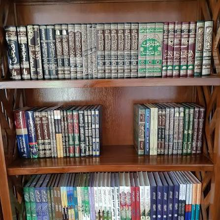
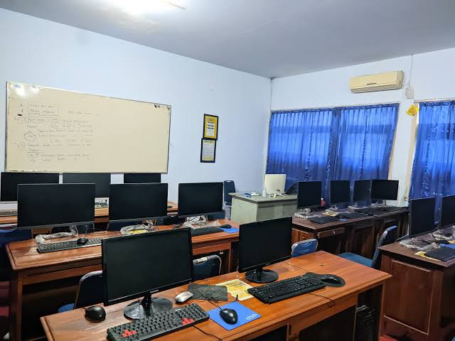
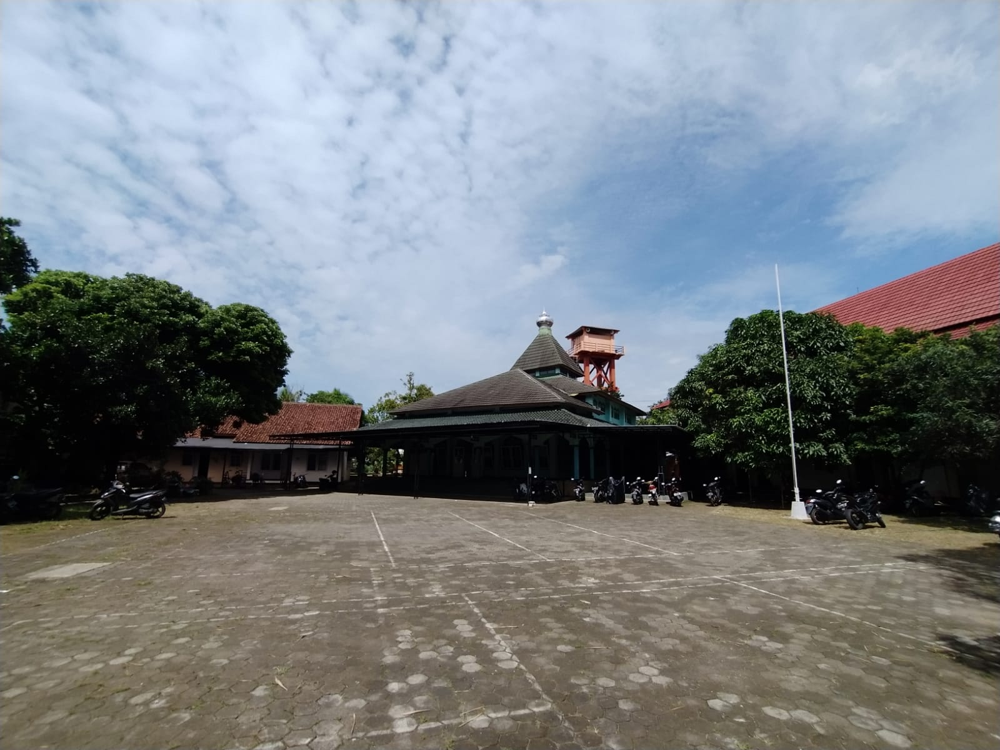

Fasilitas Penunjang
Pembelajaran
Fasilitas lengkap dan modern untuk mendukung kegiatan belajar mengajar serta aktivitas santri sehari-hari

Perpustakaan
Koleksi buku agama, umum, referensi akademik, serta ruang baca yang nyaman untuk menunjang kegiatan belajar santri.

Lab Komputer
Dilengkapi komputer dan akses pembelajaran digital untuk mendukung program bahasa, teknologi, dan keterampilan santri.

DS Mart
Menyediakan berbagai kebutuhan harian santri seperti alat tulis, makanan ringan, minuman, dan perlengkapan lainnya.

Kantin
Menyediakan makanan dan minuman yang bersih, sehat, dan terjangkau untuk memenuhi kebutuhan konsumsi santri setiap hari.

Lapangan
Digunakan untuk kegiatan olahraga, upacara, perlombaan, dan berbagai aktivitas pengembangan bakat santri.

Pendopo
Menjadi pusat kegiatan pondok seperti pertemuan, pengajian, seminar, dan acara kebersamaan santri.